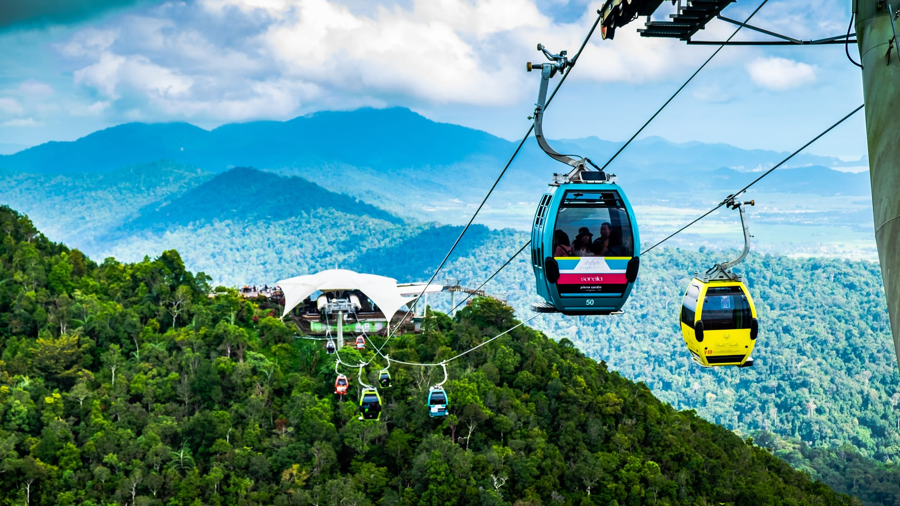

Langkawi: Jewel of Kedah
Pulau Langkawi is a gem of Kedah, famous for its beautiful beaches, clear waters, and lush landscapes. With 99 islands to explore, it offers a perfect mix of nature, adventure, and relaxation. From the stunning Sky Bridge to duty-free shopping, Langkawi has something for everyone.
Visitors can take a thrilling ride on the Langkawi SkyCab, explore the underwater wonders at Underwater World Langkawi, or enjoy duty-free shopping in Kuah Town. Whether you're a nature lover or a beach bum, Langkawi offers something for everyone.
Top Attractions:
Langkawi Sky Bridge
Langkawi Cable Car
Island Hopping Tour
The Langkawi Sky Bridge is a stunning curved suspension bridge located at the peak of Gunung Mat Cincang. Suspended 660 meters above sea level, it offers breathtaking panoramic views of the rainforest, surrounding islands, and the blue Andaman Sea. The bridge is a true engineering marvel and a must-visit spot for thrill-seekers and nature lovers alike.

The Langkawi Cable Car, also known as SkyCab, is a scenic gondola ride that transports visitors from the Oriental Village at Burau Bay to the peak of Gunung Mat Chinchang. This 2.2 km journey offers breathtaking panoramic views of Langkawi's lush rainforest, the Telaga Tujuh (Seven Wells) waterfall, and the Andaman Sea.
The Langkawi Island Hopping Tour offers a memorable half-day adventure that takes visitors on a boat trip to some of Langkawi's most stunning and tranquil islands. It's an excellent way to experience the natural beauty of the archipelago, whether you're after a relaxing beach day or an exciting nature-filled excursion.